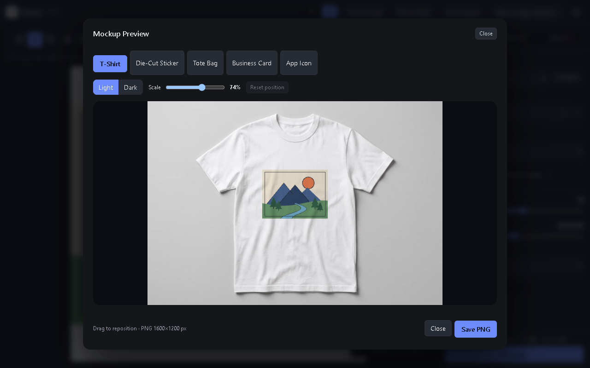
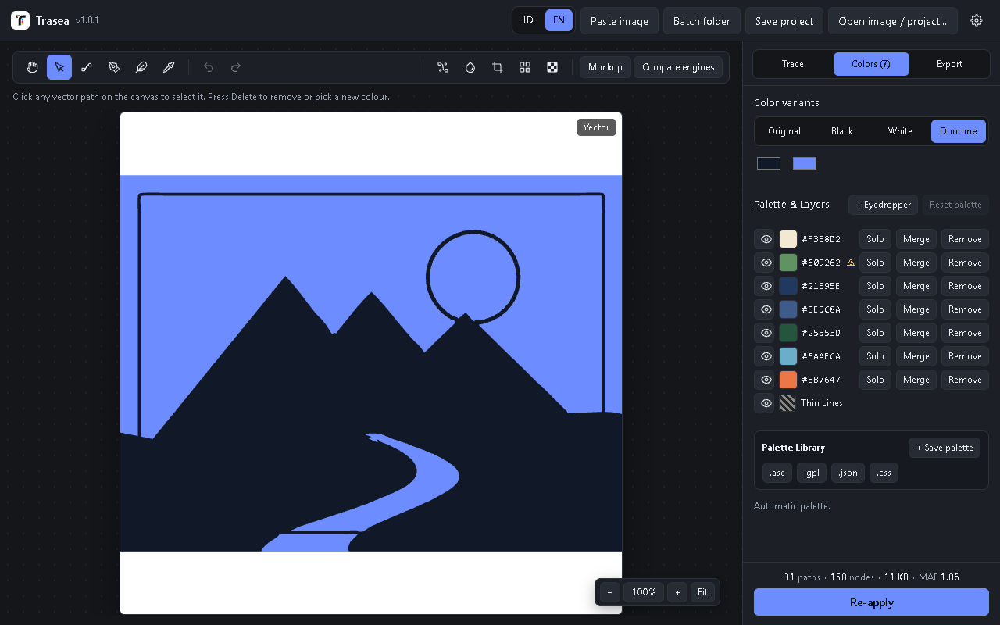
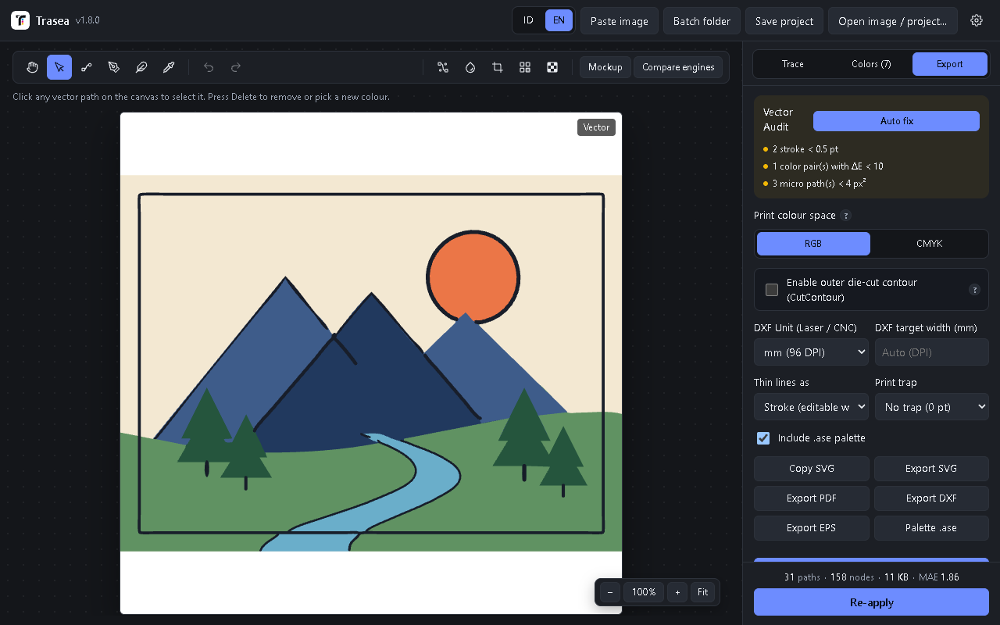
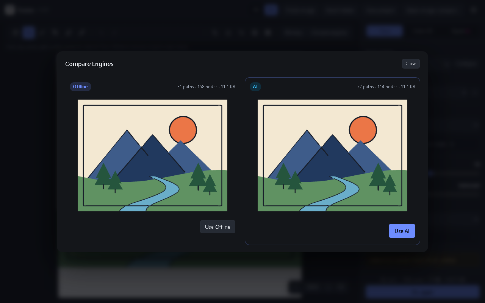
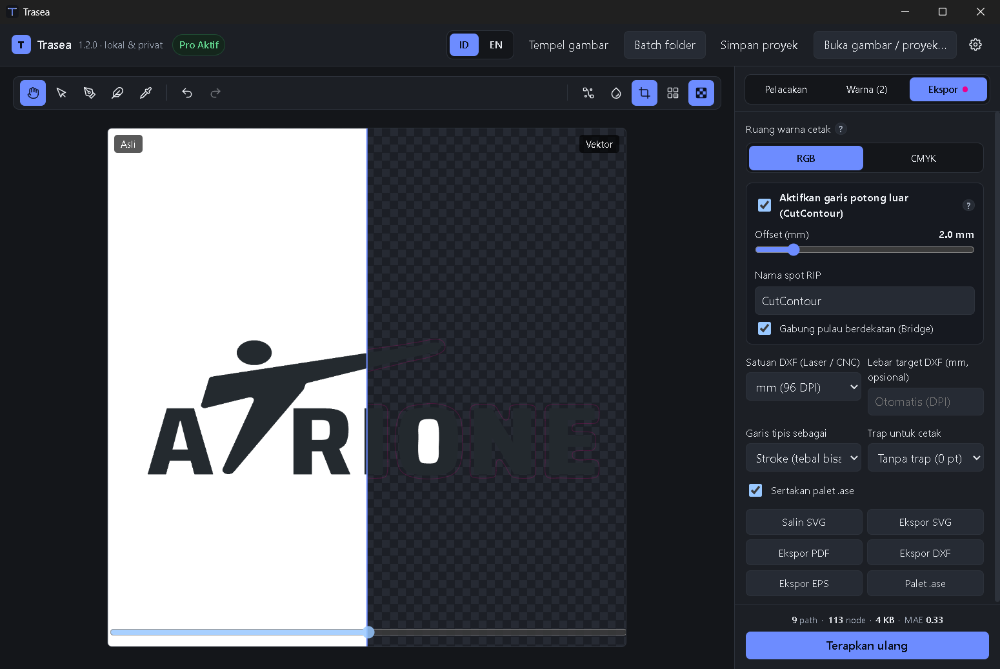
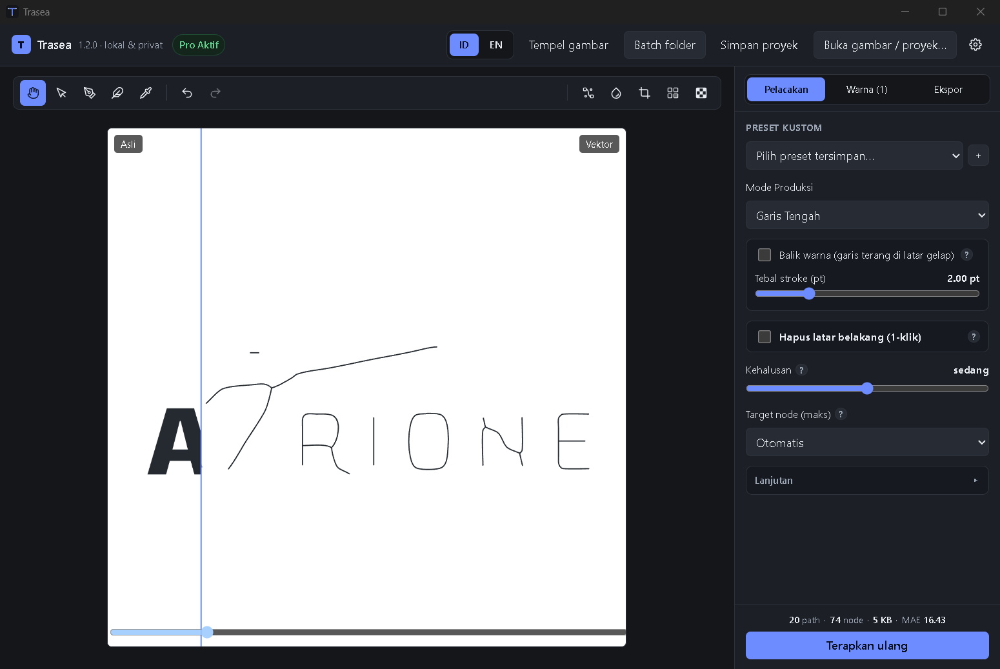
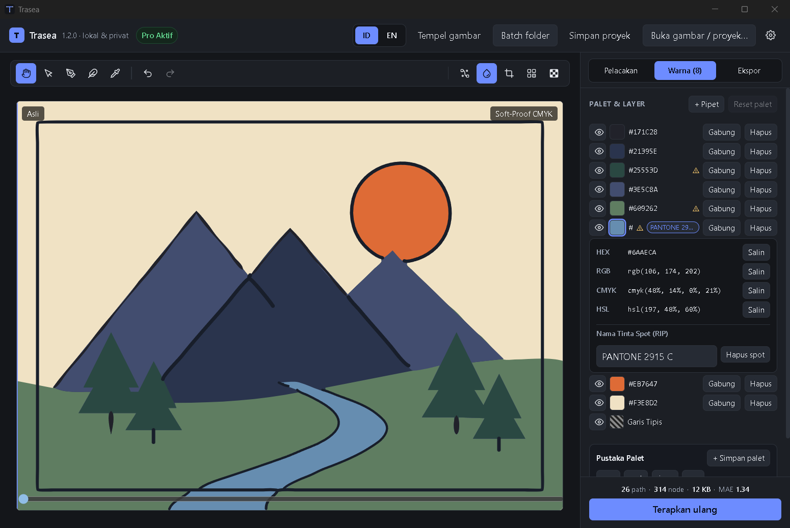

SVG
Layered Vector & Clipboard
Named layers (Background, Colour Fields, Thin Lines, CutContour, Registration) plus 1-click Copy SVG (Ctrl+Shift+C).
Local-first, 100% offline desktop vectorization studio. Turn flat artwork, logos, stickers, and sketches into tidy SVG, CMYK/Spot PDF, EPS, and AutoCAD R12 DXF — with zero cloud uploads and zero subscriptions.
Client logos and NDA drafts never leave your machine — trace and export instantly with no server queue.
Completely free and open source. Every pro print tool unlocked without accounts or watermarks.
Built for Illustrator, Affinity, CorelDraw, Roland/Mimaki RIPs, screen printing, and laser/CNC.
Import SVG output from a local AI CLI tool and compare it side-by-side against Rust/VTracer with live path, node, and KB metrics.
Inspect every stage from pixel cleanup and node editing to photorealistic mockups, brand kits, and pre-flight print checks.
Fine-tune vector curves directly on an infinite dot-grid artboard. Inspect corner and smooth nodes, simplify paths, or paint Detail and Smooth brush corrections before exporting.

Preview your vector on real studio photography before sending files to clients or print shops. Drag to reposition, scale smoothly, switch light or dark surfaces, and save high-res PNGs.

Switch between Original, All-Black, All-White, and Duotone variations in zero milliseconds, isolate any ink with Solo view, and bundle the entire brand delivery into one structured ZIP archive.

Catch plotter and press headaches before export. Trasea scans for microscopic speckle paths, redundant nodes, and open shapes, then repairs them in a single click.

Compare Trasea's instant local Rust vector engine side-by-side against imported AI CLI vectors with real path, node, and file-size metrics — then pick the winner in one click.

Purpose-built tools for sticker shops, screen printers, and fabrication labs: 1-click background removal with CutContour bleed, single-line Centerline strokes for laser/CNC, and CMYK soft-proofing with named Spot separations.



For web & brand designers, print shops, and laser workshops — pure-Rust generators with no Ghostscript or Inkscape required.
Named layers (Background, Colour Fields, Thin Lines, CutContour, Registration) plus 1-click Copy SVG (Ctrl+Shift+C).
Pure K=100% black & registration marks plus Named Spot /Separation inks including 0.25 pt CutContour.
Native EPSF-3.0 output in RGB, CMYK, or Spot %%CMYKCustomColor for legacy print RIPs and vinyl software.
Per-color layers, native CIRCLE entities, CAD Y-axis orientation, and mm (72/96/300 DPI or target width) / px units.
Export Adobe Swatch Exchange (.ase Global/Spot), GIMP/Inkscape (.gpl), JSON tokens, and CSS variables.
Packages Original, Black, White, and Duotone SVGs alongside high-res PNG previews and swatch files in one click.
Saves source SHA-256 link, crop/rotate/remove-bg state, brush strokes, node edits, spot inks, and export presets.
Generate individual 100%-black / 100%-K separation films per ink color with registration marks ready for exposure.
Latest release v1.8.2 · Free, open source, zero telemetry.
Standard NSIS setup for Windows 10 and Windows 11 with Start Menu shortcut and clean uninstaller.
Standalone ZIP archive — extract anywhere and launch without administrator privileges.
Native ARM64 disk image optimized for Apple Silicon Macs.
Native x86_64 disk image for Intel-based Mac computers.
Community builds are unsigned. If SmartScreen appears, choose More info → Run anyway.
If macOS blocks the first launch, run xattr -cr /Applications/Trasea.app in Terminal or allow it in Privacy & Security.
Yes. Trasea is released under the MIT License. Every feature — including CMYK/Spot PDF, AutoCAD DXF, Photorealistic Mockups, Brand Kit ZIP, and Pre-Flight Audit — is unlocked with no account, watermark, or subscription.
No. Preprocessing, VTracer curve fitting, node editing, and PDF/DXF generation all execute natively in Rust on your CPU/GPU—even with Wi-Fi switched off.
Offline Tracing uses Trasea's built-in Rust/VTracer engine for instant, fully local vectorization. AI CLI Import lets you bring in SVG output from a local AI CLI tool and compare both results side-by-side with live path, node, and KB metrics.
Trasea provides native 64-bit builds for Windows 10/11 (NSIS Installer and Portable ZIP) as well as macOS (both Apple Silicon ARM64 and Intel x64 DMG packages).
Open an issue directly on GitHub at Finarfin12/trasea/issues with your OS version, steps to reproduce, or a sample file description.